1Westlake University · 2The Chinese University of Hong Kong, Shenzhen · †Corresponding author
A backbone-inferred, probabilistic residue-pair graph that carries interaction information from RNA structure generation into sequence decoding — and can be refined, perturbed, and used to rank candidates.
Designing RNAs with prescribed structures is central to RNA engineering. Backbone-first approaches generate geometry before sequence assignment, yet how to transfer relational information to sequence design remains unclear. We introduce RiboCouple, which infers a probabilistic residue-pair state from backbone geometry, recycles pair probabilities through a second pass and transfers them to sequence decoding as soft attention biases. On 550 generated backbones, pair-type decoding achieved joint refolding validity of 45.1% versus 33.5% for a matched topology-free decoder. In another 110-backbone cohort, replacing aligned pair states with statistics-matched donor states reduced validity from 46.4% to 21.4%, demonstrating that decoding depends on backbone-aligned relational information. Before external refolding, pair-confidence ranking enriched validity to 59.6% in the top 248 and transferred to other generators; on a 94-chain temporally held-out native-backbone benchmark, pair-coupled decoding improved secondary-structure agreement. These findings establish backbone-inferred interaction topology as an intermediate representation connecting backbone generation, sequence decoding, and candidate prioritization.
An SE(3)-equivariant flow-matching trunk generates the RNA backbone while a pair module predicts a probabilistic residue-pair state directly from sequence-free geometry.
Binary pair probabilities are recycled into the pair representation before a second structural pass, refining the topology alongside the geometry.
Refined binary and typed pair logits become per-head soft attention biases in a Transformer sequence decoder — an explicit interface that can be perturbed at inference to test what decoding actually uses.
On the same 550 RiboCouple-generated backbones, pair-type decoding outperforms binary-pair and topology-free decoders, as well as external inverse-folding baselines (gRNAde, RIDER) and independent de novo workflows. The advantage is consistent across evaluators (TM-score, RMSD, joint validity) and length ranges.
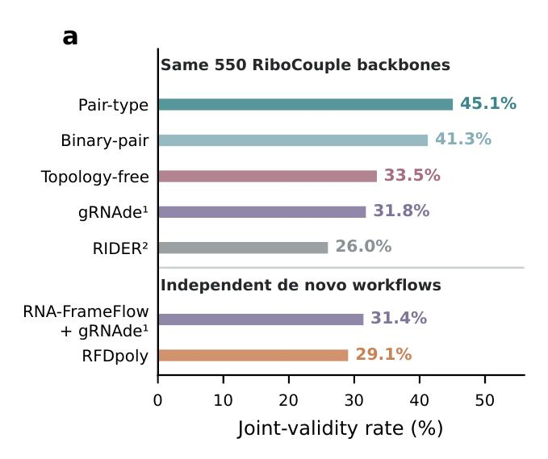
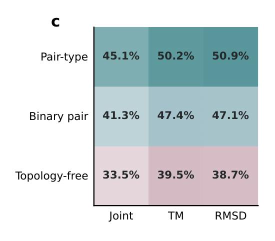
Replacing backbone-aligned pair states with statistics-matched states from other backbones — under the same frozen decoder — drops joint validity from 46.4% to 21.4%. Degradation tracks the donor-mixing fraction, and masking the highest-confidence pair edges hurts progressively more, while masking low-confidence edges does not.
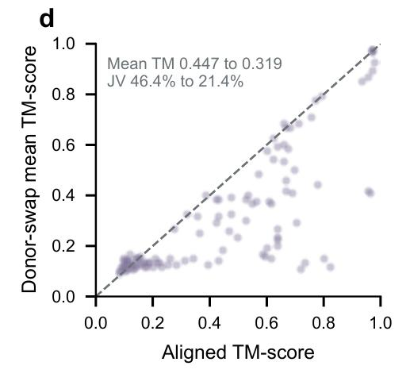
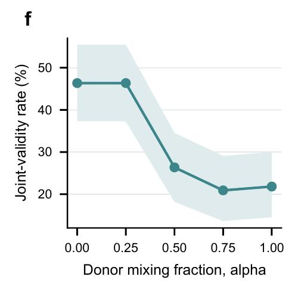
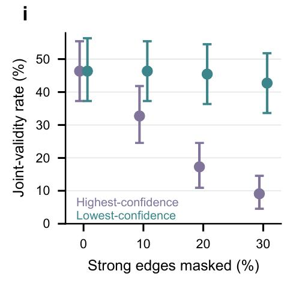
Without retraining the decoder, pair-conditioned decoding improves joint validity on independently generated RNA-FrameFlow backbones (+6.9 pp, P = 6×10−6) — the advantage is not a property of our own generator.
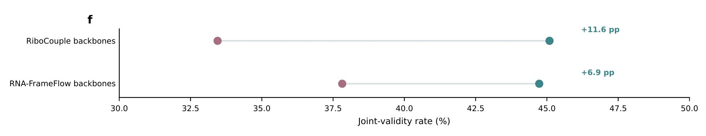
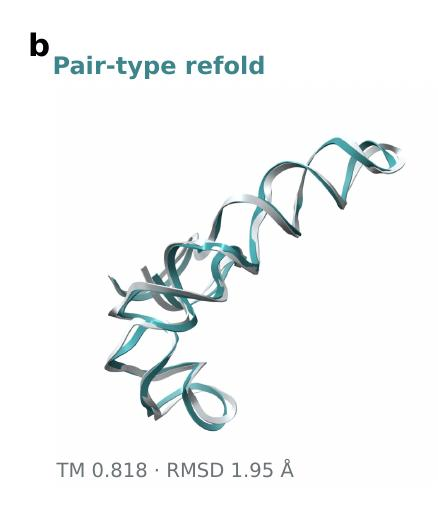
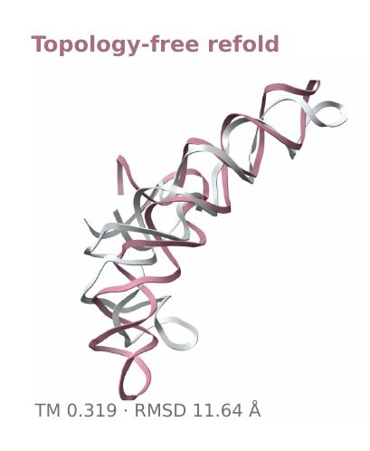
On a temporally held-out benchmark of 94 experimentally determined RNA backbones, pair-coupled decoding roughly doubles predicted secondary-structure agreement (MCC 0.266 → 0.546; canonical base-pair F1 0.267 → 0.541) at a small cost in native sequence recovery (43.5% → 41.6%), with BP-F1 comparable to single-output gRNAde top-1.
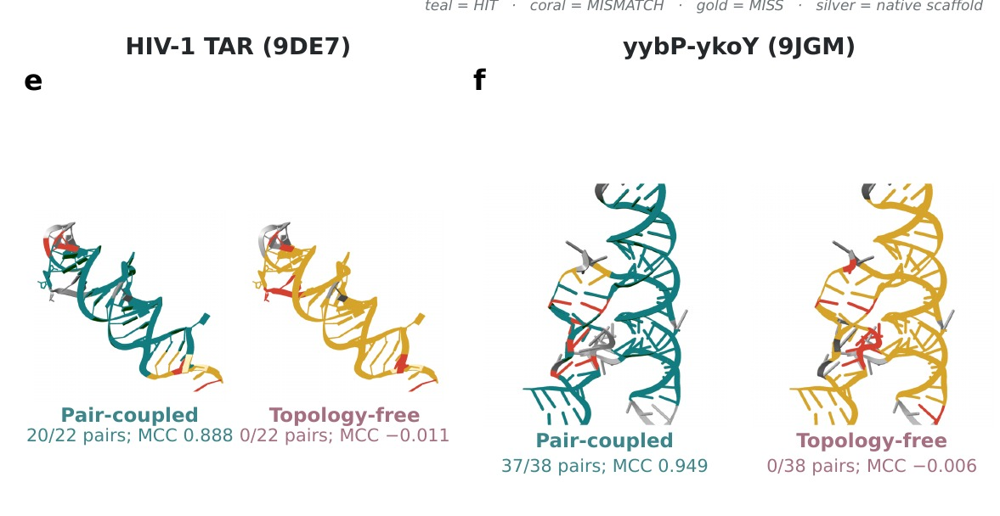
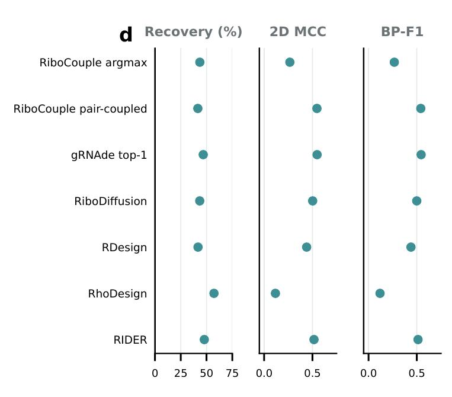
Base pairs organize the helices, junctions and tertiary contacts that RNA function depends on. Pair-coupled decoding recovers these patterns across all 12 annotated RNA groups in the native benchmark — including ribozymes and IRES elements — with canonical compatibility reaching 99.4% for tRNA pairs.
20 of 22 native base pairs reconstructed, including the upper-stem pairs adjoining the UCU bulge that mediates Tat recognition.
37 of 38 native aptamer pairs reconstructed — the pairing network that scaffolds the Mn2+-sensing conformation required for riboswitch switching.
For native pairs separated by ten or more positions in sequence, canonical compatibility rises from 74.7% with residue-wise decoding to 96.3% with pair-coupled decoding.
The pair-head confidence score ranks candidates before any external structure prediction: top-248 enrichment of joint-valid designs holds across four independent predictors (RhoFold+, Boltz-1, Boltz-2, trRosettaRNA2) and across backbone generators (RiboCouple, RFDpoly, RNA-FrameFlow).
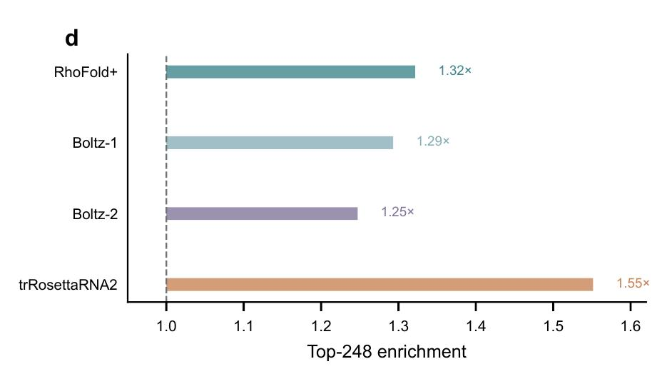
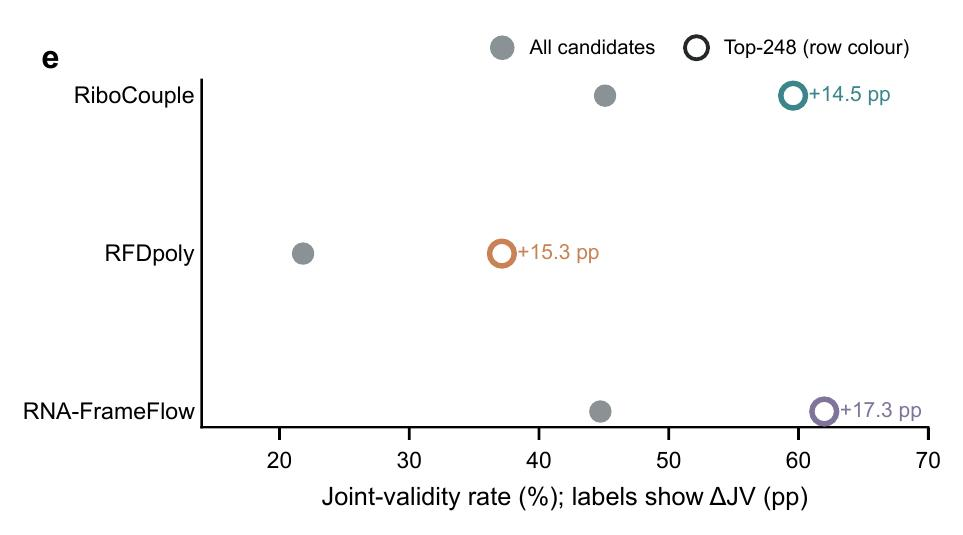
@article{ma2026ribocouple,
title = {RiboCouple links RNA backbone generation to sequence design through a learned interaction topology},
author = {Ma, Zhiqi and Zheng, Yefeng},
year = {2026},
journal = {bioRxiv},
doi = {10.64898/2026.10.15.759394}
}